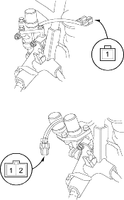
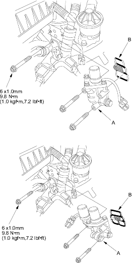

- Remove the resonator (see page 11-148).
- Disconnect the VTEC solenoid valve connector.
- Measure resistance between the VTEC solenoid valve connector terminal No. 1 and body ground (No. 1, No. 2 and body ground)*.
Resistance: 14-30 ohms

- If the resistance is within specifications, remove the VTEC solenoid valve assembly (A) from the cylinder head, and check the VTEC solenoid valve filter (B) for clogging. If there is clogging, replace the solenoid valve filter, the engine oil filter and the engine oil.
